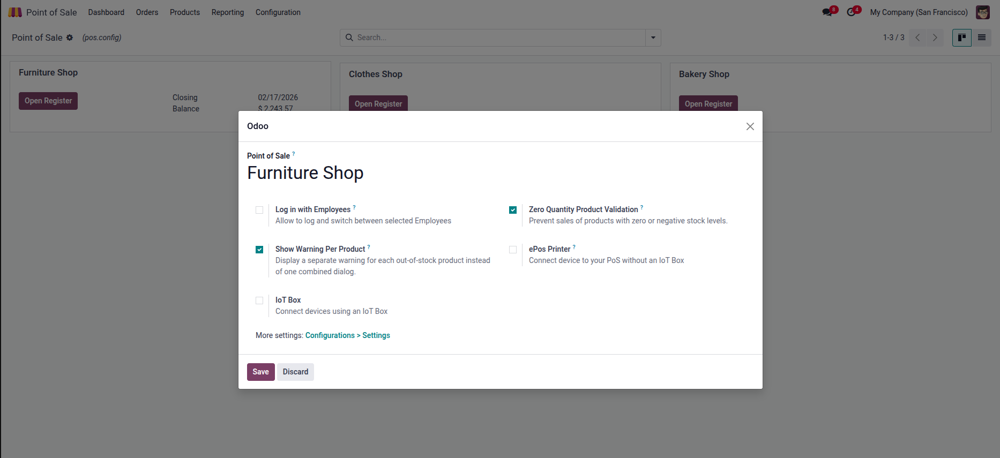
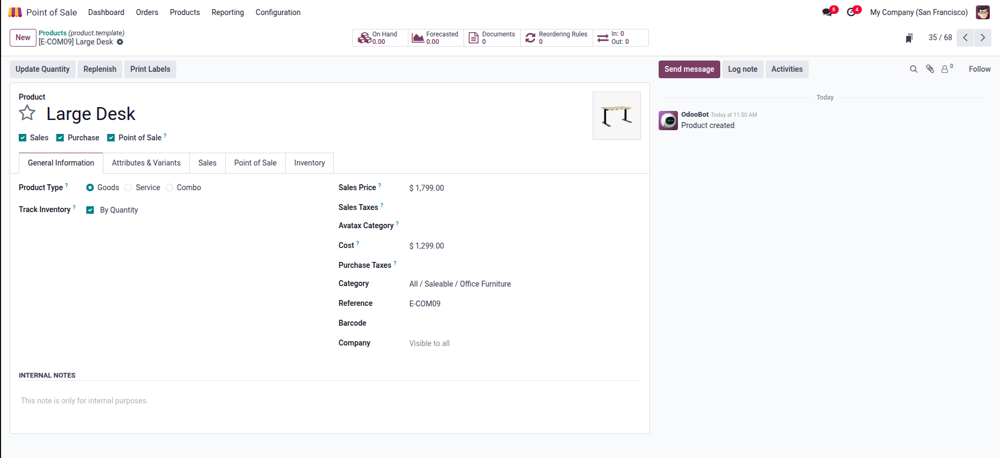
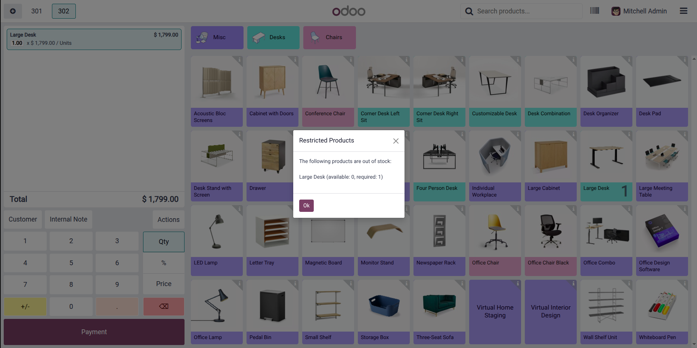

Zero Quantity Product Validation
Check this option to prevent sales of products with zero or negative stock levels. When enabled, the POS will block payment if any product in the order has insufficient stock.
Show Warning Per Product
When checked, a separate warning dialog is displayed for each out-of-stock product individually. When unchecked, all restricted products are shown in one combined dialog.

On Hand: 0.00 Units
The product "Large Desk" has 0.00 Units on hand in the warehouse. When a cashier tries to sell this product, the module will block the payment.
Smart Detection
Only storable products (Product Type: Goods, Track Inventory: By Quantity) are validated. Services and non-inventory items are never restricted.

Restricted Products
The following products are out of stock:
Large Desk (available: 0, required: 1)
The warning clearly shows the product name, available quantity and required quantity so the cashier knows exactly what to do. Payment is completely blocked until the restricted products are removed from the order.
If the same product appears on multiple order lines, quantities are aggregated before checking — ensuring accurate stock comparison.
Works with both Community and Enterprise editions of Odoo 18.
Different POS shops can have different stock restriction settings.
Only 2 boolean fields added. No heavy dependencies or performance impact.
Email: numanabdullah758@gmail.com
LinkedIn: linkedin.com/in/numan-abdullah
If you find this module useful, please leave a rating on the Odoo App Store!